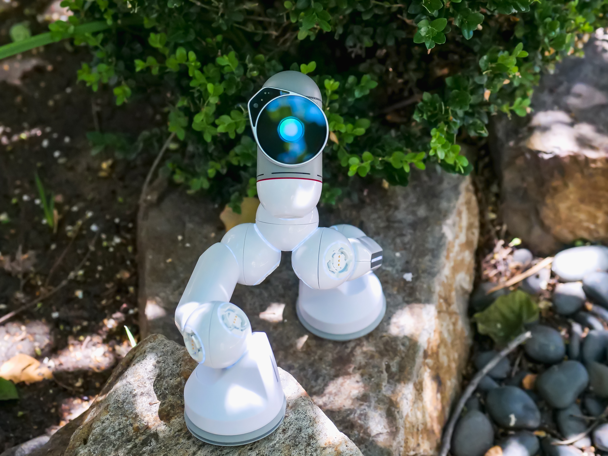

Exploring the Future of Plant Science
The plant kingdom is the basis for life on earth.They are essential in maintaining our climate and give us food, oxygen, and medication. Finding innovative ways to harness plant power is crucial now more than ever as our globe struggles with issues like climate change, population growth, and food insecurity.Fortunately, researchers are rising to the occasion and creating ground-breaking tools and methods that are transforming the study of plants.
The future of plant science is filled with exciting possibilities. By harnessing the power of plants, we can create sustainable solutions to some of the world's most pressing problems. Whether it's creating new crop varieties, developing plant-based medicines, or finding sustainable alternatives to traditional materials, the potential for plant science is endless.